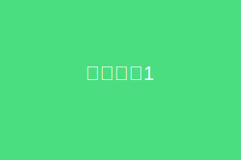
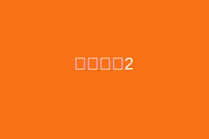

广州有什么特色景点
广州美食推荐
广州交通指南
广州有什么特色景点
收起深度思考
分析了广州作为历史文化名城和现代化大都市的特点，整理了具有代表性的景点信息...
广州作为中国历史文化名城和现代化大都市，拥有丰富的历史文化和自然景观。以下是一些广州的特色景点：
1. 越秀公园
广州最大的综合性公园，内有五羊雕像、镇海楼、中山纪念堂等景点，是广州市的标志性景观。

2. 陈家祠
始建于清代，是广州保存最完好的古建筑之一，展示了岭南特色的建筑艺术和民俗文化。

3. 沙面岛
位于珠江畔，是昔日的欧洲租界，保存着大量西式建筑，是广州城内的"异国情调"景点。
4. 广州塔（小蛮腰）
现代广州的标志性建筑，是世界第四高塔，提供广州全景视野，夜晚灯光秀尤为壮观。
5. 上下九步行街
广州最有代表性的传统商业步行街，汇集了众多老字号和地道美食。
有帮助
需改进